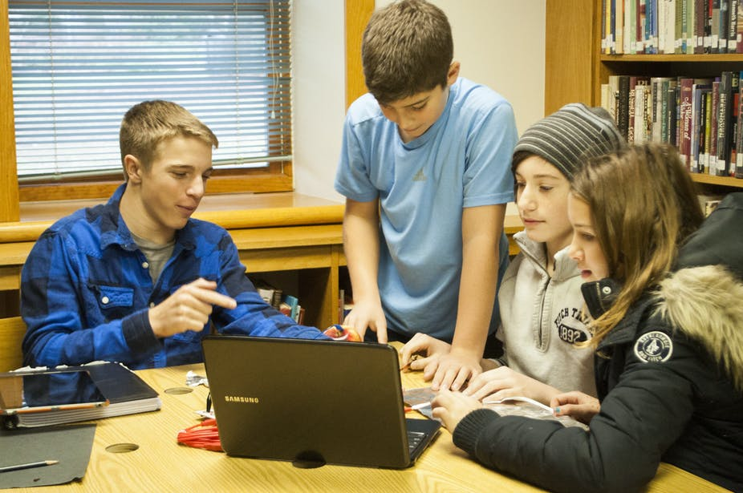

Computing is the field for you! Computing has emerged as one of the most in-demand fields, offering lucrative career options.
At Huckleberry High we understand the importance of inspiring our students to pursue careers in Computing. With the industry experiencing a decline in the number of students going on to study Computing, and we want to change it.
|  |
At Huckleberry High e've made sure that all the information you need to know about pursuing a career in Development is available on our site. We also made sure that salary information is prominent.
Join us to inspire the next generation of Computing professionals. Explore our site, learn about the possibilities that Computing has to offer.
Nicole Degree: Bachelor of Computing Science Current position: Software Engineer "The Computing Science degree was not an educational path I originally looked for - it found me. After my first course in the Computing Science program, I never looked back. There are a variety of things that made my time at TRU worthwhile and helped me achieve my goals. There is a wide range of courses that involve not only technical understanding of course material, but applied learning as well." "“Getting your hands dirty" in the software, hardware, and languages being learned assisted me to gain a stronger understanding of important material."